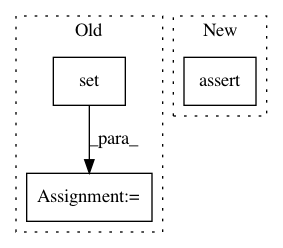

f2f419b89221602dc31c69de32df1cba281db481,upsetplot/tests/test_data.py,,test_from_contents,#,90
Before Change
empty_data = pd.DataFrame(index=["aa", "bb", "cc", "dd", "ee", "ff"])
out = from_contents(OrderedDict(contents), data=empty_data,
id_column=id_column)
out2 = from_memberships(memberships=[{"cat1"},
{"cat1"},
{"cat1", "cat2"},
{"cat2"},
{"cat3"},
[]],
data=empty_data)
assert_series_equal(out[id_column].reset_index(drop=True),
pd.Series(["aa", "bb", "cc", "dd", "ee", "ff"],
name=id_column))
assert_frame_equal(out.drop(columns=[id_column]), out2)
After Change
assert not out.index.to_frame()["cat4"].any() // cat4 should be all-false
assert len(out.index.names) == 4
out.index = out.index.to_frame().set_index(["cat1", "cat2", "cat3"]).index
assert_frame_equal(out, baseline)
@pytest.mark.parametrize("id_column", ["id", "blah"])
def test_from_contents_invalid(id_column):
In pattern: SUPERPATTERN
Frequency: 3
Non-data size: 3
Instances
Project Name: jnothman/UpSetPlot
Commit Name: f2f419b89221602dc31c69de32df1cba281db481
Time: 2019-05-30
Author: joel.nothman@gmail.com
File Name: upsetplot/tests/test_data.py
Class Name:
Method Name: test_from_contents
Project Name: andresriancho/w3af
Commit Name: e6a540f792db2f72147600110aeef26d66fc5c2d
Time: 2018-01-04
Author: andres.riancho@gmail.com
File Name: w3af/plugins/tests/audit/test_redos.py
Class Name: TestREDoS
Method Name: test_found_redos
Project Name: SPFlow/SPFlow
Commit Name: a94dbd2936fdc64e921333c04e0d66d491efc706
Time: 2018-11-19
Author: claas@voelcker.net
File Name: src/spn/algorithms/stats/Moments.py
Class Name:
Method Name: Moment